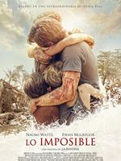
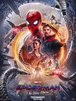
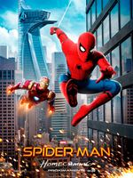
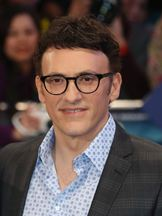

Tom Holland es uno de los intérpretes más emergentes de Hollywood. Ganó reconocimiento mundial por su interpretación de Peter Parker / Spider-Man en cuatro entregas del
Universo cinematográfico de Marvel: Capitán América: Civil War (2016), Spider-Man: Homecoming (2017), Vengadores: Infinity War (2018) y Vengadores: Endgame (2019),
esta última se convirtió en la segunda película más taquillera de la historia. Holland retomó el papel en Spider-Man: Lejos de Casa, que se estrenó en julio de 2019, filme que
consiguió 1.100 millones en todo el mundo y es la película del personaje más exitosa hasta la fecha.
Nacido en Londres en 1996, Holland hizo su debut sobre el escenario como protagonista del musical Billy Elliot en el Teatro Victoria Palace en Londres, entre 2008 y 2010.
Este papel le valió para que el director Juan Antonio Bayona se fijase en él para encarnar a uno de los niños protagonistas de su película Lo imposible. Holland ha
protagonizado también Cherry, de los directores Joe y Anthony Russo: basada en la novela homónima superventas del The New York Timess, que cuenta la historia real de un
médico del ejército con estrés postraumático que se convierte en ladrón de bancos después de perder todo su dinero por su adicción a las drogas. También podemos verle en la
producción de Netflix El Diablo a Todas Horas, una adaptación de la novela homónima de 2011 de Donald Ray Pollock. Esta cinta está ambientada en los años 60, donde nos
presentan a un extraño y cautivador grupo de personas tiene problemas mentales por culpa de la Segunda Guerra Mundial.
SU DEBUT EN LA PANTALLA


Arrietty y el mundo de los
Lo Imposible
Mi vida ahora
Locke
diminutos
2010
2012
2013
2013
SUS MEJORES PELÍCULAS Y SERIES



Spider-Man: No Way Home
Lo Imposible
Spider-Man: Homecoming
Spider-Man: Far From Home
2021
2012
2017
2019
SU CARRERA EN NÚMEROS
8 0 22
AÑOS DE CARRERA PREMIO PELÍCULAS
2 0 0
SERIES NOMINACIÓN TAQUILLA
HA TRABAJADO CON

Robert Downey Jr.
Joe Russo
Jonathan Kolia Favreau
Anthony J. Russo
películas y #serie
4 películas y #serie
4 películas y #serie
4 películas y #serie